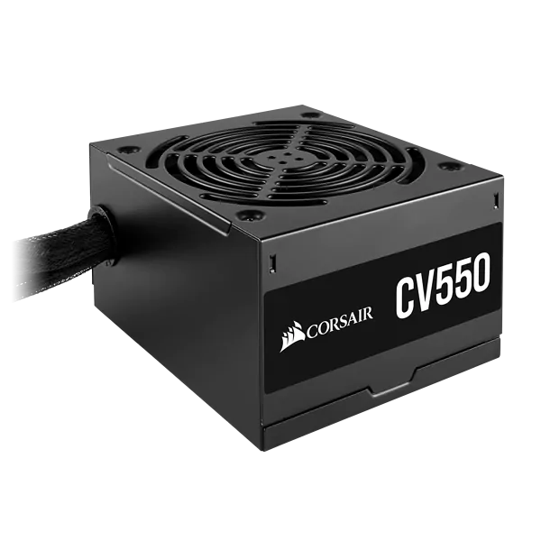
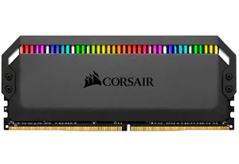
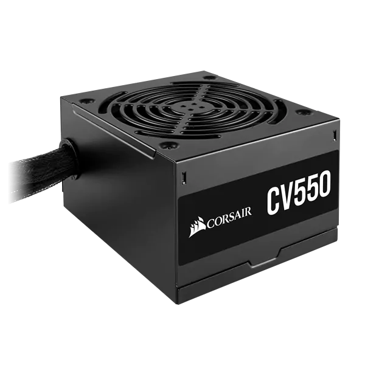
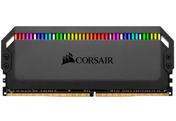

Acerca de nosotros
Es una empresa privada con sede en Fremont,California,E.E.U.U. Fue fundada en 1994 por Don Lieberman, John Beekley, y Andy Paul. Originalmente, la empresa produjo módulos COAST (Cache on a stick) para sistemas basados en Intel Pentium. Sin embargo, Intel movió la caché de la placa madre al microprocesador, y Corsair cambió su producto a memoria de ordenador.
 




A fines de 1990, Corsair cambia de nuevo de la memoria estándar a memoria preparada por encima de las especificaciones, ideal para su uso en overclocking. Su línea de producto XMS es conocida como la línea de "alto rendimiento" u "overclocking", mientras que la línea Value Select está diseñada para el usuario normal. Corsair también fabrica la Memoria USB Flash Voyager, un pendrive USB envuelto en caucho que es resistente al agua y ha adquirido buena fama entre los aficionados debido a su robustez. De forma similar a la línea Value Select, existe un pendrive USB de bajo precio fabricado por Corsair, pero en caja de plástico estándar y su densidad no llega tan alto como el Flash Voyager.
Corsair también ha producido numerosos kits de refrigeración por agua. Comenzando con la Hydrocool, una solución externa con una pantalla de LEDs que muestra la temperatura actual y un asa de transporte, se pasó luego a los kits internos con el Corsair Cool, que se basaba en gran medida en un diseño de Swiftech. Corsair diseñó por sí misma su siguiente sistema de refrigeración por agua, el Nautilus 500. Se trata de una única unidad externa con un solo ventilador de 120 mm y radiador, una bomba de bajo ruido, y velocidad variable del ventilador. El Nautilus 500 es una desviación importante de otros kist de refrigeración por agua, ya que fue diseñado para la venta al por menor a un precio asequible aunque sin sacrificar el rendimiento o la facilidad de instalación. A partir de 2006, Corsair ha comenzado a vender fuentes de alimentación bajo su propia marca comercial basados en diseños de Seasonic y Channel Well.